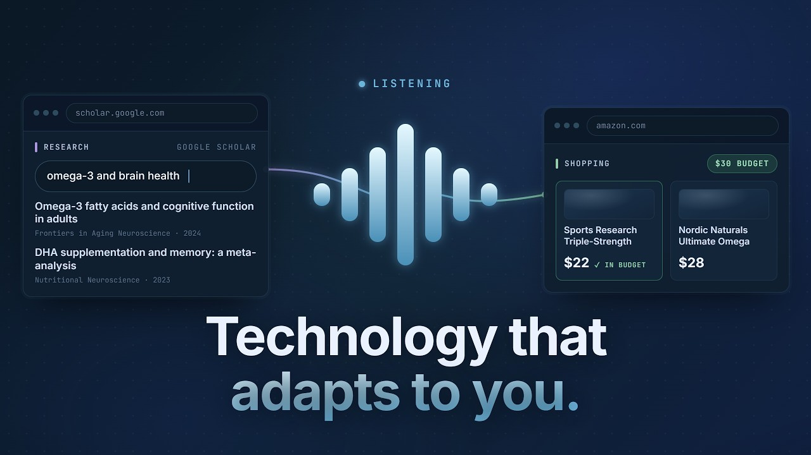

OpenSight
I owned multi-agent orchestration and planning for a voice-first assistant for blind and low-vision users.

Two-minute demo ↗Top 10 Finalist · 2026 GDG on Campus NA Solution Challenge
Following Round 1 judging.
Team: Abhijit Somala, Nico Parong, Dhruv Mulajkar.
Code ↗Technical record
Gemini 2.0 Flash on Vertex AI routes to specialists. The wider team system connects Deepgram, FastAPI over WebSockets, Playwright, and Google Cloud text-to-speech.